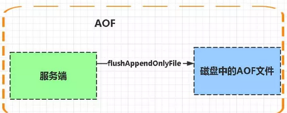

Redis
Redis 简介
Redis 是完全开源免费的，遵守BSD协议，是一个高性能的key-value数据库。
Redis 与其他 key - value 缓存产品有以下三个特点：
- Redis支持数据的持久化，可以将内存中的数据保存在磁盘中，重启的时候可以再次加载进行使用。
- Redis不仅仅支持简单的key-value类型的数据，同时还提供list，set，zset，hash等数据结构的存储。
- Redis支持数据的备份，即master-slave模式的数据备份。
Redis 优势
- 性能极高 – Redis能读的速度是110000次/s,写的速度是81000次/s 。
- 丰富的数据类型 – Redis支持二进制案例的 Strings, Lists, Hashes, Sets 及 Ordered Sets 数据类型操作。
- 原子 – Redis的所有操作都是原子性的，意思就是要么成功执行要么失败完全不执行。单个操作是原子性的。多个操作也支持事务，即原子性，通过MULTI和EXEC指令包起来。
- 丰富的特性 – Redis还支持 publish/subscribe, 通知, key 过期等等特性。
Redis 数据类型
String字符串：
格式: set key value
string类型是二进制安全的。意思是redis的string可以包含任何数据。比如jpg图片或者序列化的对象 。
string类型是Redis最基本的数据类型，一个键最大能存储512MB。
使用场景
- 缓存：将数据以字符串方式存储
- 计数器功能：比如视频播放次数，点赞次数。
- 共享session：数据共享的功能，redis作为单独的应用软件用来存储一些共享数据供多个实例访问。
Hash（哈希）
格式: hmset name key1 value1 key2 value2
Redis hash 是一个键值(key=>value)对集合。
Redis hash是一个string类型的field和value的映射表，hash特别适合用于存储对象。
1
2
3
4
5
6
7
8
9
10
11
12hset key field value
hsetnx key field value //与setnx命令一样，不存在则设置值，用于添加，作用在field上面
hget key field //获取值
hdel key field // 删除值
hlen key //子酸field的个数
hmset key field value [filed value] //批量设置field-value
hexists key field //判断filed是否存在
hkeys key //获取所有的field
hvals key //获取所有的value
hgetall key //获取所有的field-value ，如果元素数较多会存在阻塞redis的可能
hincreby key filed
##### 使用场景
+ 和字符串很像，基本上redis对字符串操作的命令,Redis的Hash一般也存在，不过在命令前多个一个h。
+ 一些关系型数据库中不是特别复杂的表，也无需复杂的关系查询，可以使用Redis的Hash来存储，也可以用Hash做表数据缓存。List（列表）
Redis 列表是简单的字符串列表，按照插入顺序排序。你可以添加一个元素到列表的头部（左边）或者尾部（右边）
1
2
3
4
5
6
7
8
9
10
11
12
13
14rpush key value [value...] //从右插入元素
lpush key value [value...] //从左边插入元素
lrange key start end //获取指定范围的元素列表
lindex key index //获取列表指定索引下标的元素
llen key //获取列表的长度
lpop key // 从列表左侧弹出元素
rpop key // 从列表右侧弹出元素
lrem key count value //从列表中找到等于value的元素，并进行删除，根据count的不同有不同的情况
lset key index newValue //修改指定索引下标的元素
blpop key timeout //阻塞式左弹出key
brpop key timeout //阻塞式右弹出key
##### 使用场景：
- 消息队列：我们公司就是使用redis做消息队列，lpush + brpop或rpop命令，实现先进先出，如果消费失败客户端把key再放回去，消费成功真的remove掉Set（集合）
集合是用来保存多个字符串的元素，内部不允许有重复远古三，集合内的元素是无序的，Redis支持集合的增删改查，同时支持多个集合取交集，并集，差集
1
2
3
4
5
6
7
8
9
10
11sadd key value [value...] //添加元素
srem key value [value...] //删除元素
scard key //计算元素的个数
sismember key value //判断元素是否在集合中
srandmember key [count] //随机从集合中返回指定个数的元素，不写默认为1
spop key //从集合随机取出元素
smembers key //获取集合内的所有元素
sinter key1 key2 //求集合的交集
sunion key1 key2 //求集合的并集
sdiff key1 key2 //求集合的差集Redis的Set是string类型的无序集合。
集合是通过哈希表实现的，所以添加，删除，查找的复杂度都是O(1)。
应用场景
- 标签
zset(sorted set：有序集合)
它保留了元素不能重复的特性，并且元素是有序的。
格式: zadd name score value
Redis zset 和 set 一样也是string类型元素的集合,且不允许重复的成员。
不同的是每个元素都会关联一个double类型的分数。redis正是通过分数来为集合中的成员进行从小到大的排序。
zset的成员是唯一的,但分数(score)却可以重复。
1
2
3
4
5
6
7
8
9
10
11
12
13
14
15
16zadd key score member //score是可以重复的，添加key的时候指定分数
zcard key //计算成员个数
zscore key member //计算某个成员的分数
zrank key member //计算成员排名，从低到高
zrevrank key member //计算成员排名，从高到低
zrem key member [member...] //删除成员
zincrby key increnment member //增加成员的分数
zrange key start end [withscores] //从低到高返回指定排名的分数
zrevrange key start end [withscores] //从高到低返回
zrangebyscore key min max [withscores] [limit offset count] //按照分数从低到高返回
zrevrange score key min max [withscores] [limit offset count] //按照分数从高到低返回成员
withscore 代表返回的时候带上成员的分数
...还有求交集，并集等操作
##### 使用场景
+ 排行榜，目前公司的飙车榜用的是redis的有序集合，返回前面排名的元素之后再使用redis的mget命令获取获取到的key信息。redis数据库的常见问题？
什么是Redis持久化？Redis有哪几种持久化方式？优缺点是什么？
持久化就是把内存的数据写到磁盘中去，防止服务宕机了内存数据丢失。
Redis 提供了两种持久化方式:RDB（默认） 和AOF
RDB：
rdb是Redis DataBase缩写 (快照)
功能核心函数rdbSave(生成RDB文件)和rdbLoad（从文件加载内存）两个函数

AOF:
Aof是Append-only file缩写

每当执行服务器(定时)任务或者函数时flushAppendOnlyFile 函数都会被调用， 这个函数执行以下两个工作
aof写入保存：
WRITE：根据条件，将 aof_buf 中的缓存写入到 AOF 文件
SAVE：根据条件，调用 fsync 或 fdatasync 函数，将 AOF 文件保存到磁盘中。
存储结构:
内容是redis通讯协议(RESP )格式的命令文本存储。
比较：
1、aof文件比rdb更新频率高，优先使用aof还原数据。
2、aof比rdb更安全也更大
3、rdb性能比aof好
4、如果两个都配了优先加载AOF
07.
单机版

特点：简单
问题：
1、内存容量有限 2、处理能力有限 3、无法高可用。
主从复制

Redis 的复制（replication）功能允许用户根据一个 Redis 服务器来创建任意多个该服务器的复制品，其中被复制的服务器为主服务器（master），而通过复制创建出来的服务器复制品则为从服务器（slave）。 只要主从服务器之间的网络连接正常，主从服务器两者会具有相同的数据，主服务器就会一直将发生在自己身上的数据更新同步 给从服务器，从而一直保证主从服务器的数据相同。
特点：
1、master/slave 角色
2、master/slave 数据相同
3、降低 master 读压力在转交从库
问题：
无法保证高可用
没有解决 master 写的压力
哨兵

Redis sentinel 是一个分布式系统中监控 redis 主从服务器，并在主服务器下线时自动进行故障转移。其中三个特性：
监控（Monitoring）： Sentinel 会不断地检查你的主服务器和从服务器是否运作正常。
提醒（Notification）： 当被监控的某个 Redis 服务器出现问题时， Sentinel 可以通过 API 向管理员或者其他应用程序发送通知。
自动故障迁移（Automatic failover）： 当一个主服务器不能正常工作时， Sentinel 会开始一次自动故障迁移操作。
特点：
1、保证高可用
2、监控各个节点
3、自动故障迁移
缺点：主从模式，切换需要时间丢数据
没有解决 master 写的压力
redis哨兵模式和高可用集群解析
https://www.cnblogs.com/bingshu/p/9776610.html
08.
使用过Redis分布式锁么，它是怎么实现的？
先拿setnx来争抢锁，抢到之后，再用expire给锁加一个过期时间防止锁忘记了释放。 如果在setnx之后执行expire之前进程意外crash或者要重启维护了，那会怎么样？
set指令有非常复杂的参数，这个应该是可以同时把setnx和expire合成一条指令来用的！
09.
使用过Redis做异步队列么，你是怎么用的？有什么缺点？
一般使用list结构作为队列，rpush生产消息，brpop消费消息。当lpop没有消息的时候，要适当sleep一会再重试。
缺点：
在消费者下线的情况下，生产的消息会丢失，得使用专业的消息队列如rabbitmq等。
能不能生产一次消费多次呢？
使用pub/sub主题订阅者模式，可以实现1:N的消息队列。
10
什么是缓存穿透？如何避免？什么是缓存雪崩？何如避免？
- 缓存穿透
一般的缓存系统，都是按照key去缓存查询，如果不存在对应的value，就应该去后端系统查找（比如DB）。一些恶意的请求会故意查询不存在的key,请求量很大，就会对后端系统造成很大的压力。这就叫做缓存穿透。
如何避免？
1：对查询结果为空的情况也进行缓存，缓存时间设置短一点，或者该key对应的数据insert了之后清理缓存。
2：对一定不存在的key进行过滤。可以把所有的可能存在的key放到一个大的Bitmap中，查询时通过该bitmap过滤。
- 缓存雪崩
当缓存服务器重启或者大量缓存集中在某一个时间段失效，这样在失效的时候，会给后端系统带来很大压力。导致系统崩溃。
如何避免？
1：在缓存失效后，通过加锁或者队列来控制读数据库写缓存的线程数量。比如对某个key只允许一个线程查询数据和写缓存，其他线程等待。
2：做二级缓存，A1为原始缓存，A2为拷贝缓存，A1失效时，可以访问A2，A1缓存失效时间设置为短期，A2设置为长期
3：不同的key，设置不同的过期时间，让缓存失效的时间点尽量均匀。